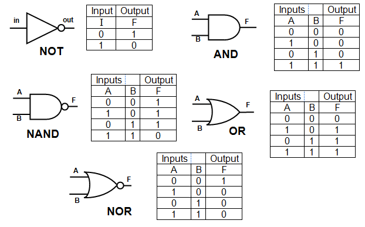

Boolean Operations are simply AND, OR, NOT, or AND NOT. You will soon learn whatall these terms mean. They allways return true, if the statement is true of false, if the statement is false. Now we will learn what each of these terms means.
I like cookies and milkThis would be true because I do like both of those thing. A statement that would be
My name is Nora AND I am 10 years old.This statement would be false because yes it is true that my name is Nora but I am not 10 years old, that would make the entire statement false.
I am a junior in Highschool OR I go to Yorktownyes it is true that I am a junior but I do not go to Yorktown. So would this statement be true or false. Well it would be true because one of the statements is true.
!when programming and if it is outisde parentheseis of a statement then it will be distributed to each term in the statement. An example of this would be
The sky is NOT purple AND The Earth is NOT flatThis would be a true statement.
A way of visually representing these statements would be through logic gates. Here is a chart that represents all of the combinations of Boolean statement.
